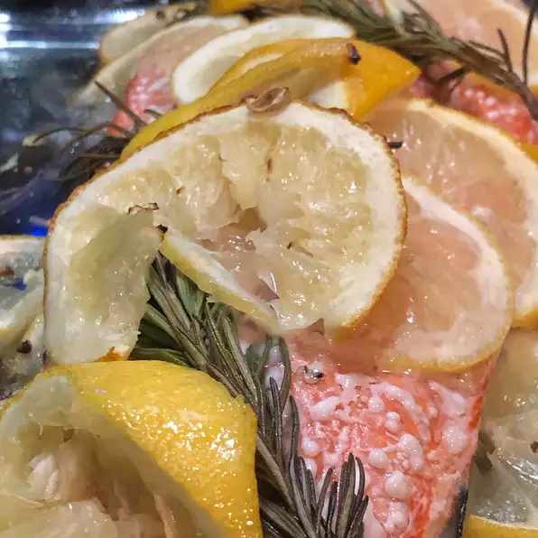

Lemon Rosemary Salmon

Description
A tender baked salmon seasoned with fresh herbs and lemon. This is the perfect
romantic dinner for two when served with an Oregon Pinot Noir, crusty bread,
wild rice, and salad.
Ingredients
- 1 lemon thinly sliced
- 4 sprigs fresh rosemary
- 2 salmon filets, bones and skin removed
- coarse salt to taste
- olive oil as needed
Steps:
- Preheat the oven to 400° F
- Arrange half the lemon slices in a single layer in a baking dish. layer with 2 sprigs of rosemary
- Sprinkle salmon with salt and set on lemons. Top with rosemary and drizzle of olive oil
- Bake for 20 minutes in the preheated oven, or until fish is easily flaked with a fork